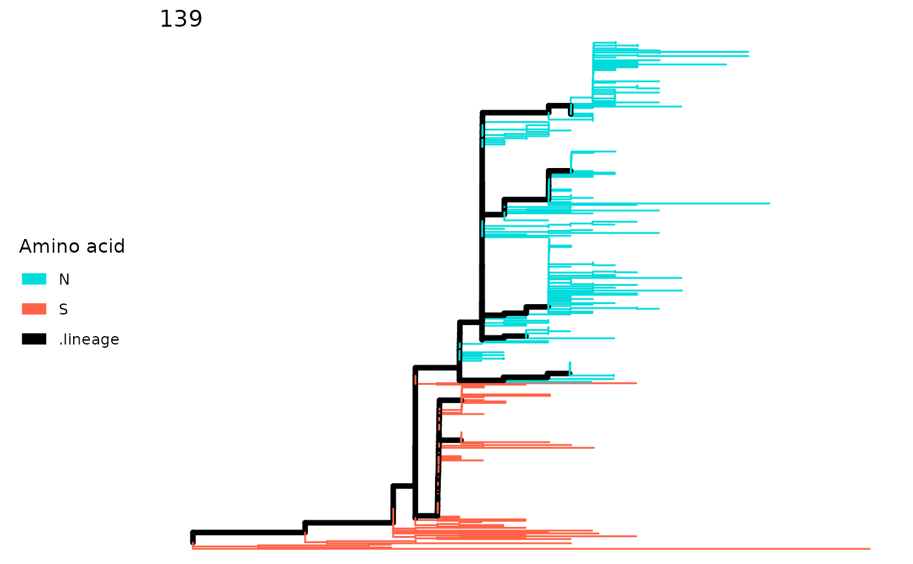

For lineagePath, the tree will be colored according to
the amino acid of the site. The color scheme tries to assign
distinguishable color for each amino acid.
Visualize the sitePath object which can be extracted by
using extractSite on the return of
fixationSites.
For fixationSites, it will color the ancestral
tips in red, descendant tips in blue and excluded tips in grey.
# S3 method for lineagePath plotSingleSite(x, site, showPath = FALSE, showTips = FALSE, ...) # S3 method for sitePath plot(x, y = NULL, showTips = FALSE, ...) # S3 method for fixationSites plotSingleSite(x, site, select = NULL, ...) # S3 method for multiFixationSites plotSingleSite(x, site, select = NULL, ...)
| x | A |
|---|---|
| site | For |
| showPath | If plot the lineage result from lineagePath. |
| showTips | Whether to plot the tip labels. The default is |
| ... | Arguments in |
| y | For a |
| select | Select which fixation path in to plot. The default is NULL which will plot all the fixations. |
The function only makes plot and returns no value (It behaviors like
the generic plot function).
data(zikv_tree) data(zikv_align) tree <- addMSA(zikv_tree, alignment = zikv_align) paths <- lineagePath(tree) plotSingleSite(paths, 139)